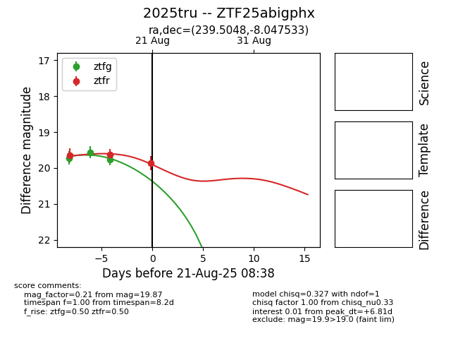

Target 2025tru at 2025-08-21 09:16, see:
FINK: fink-portal.org/ZTF25abigphx
Lasair: lasair-ztf.lsst.ac.uk/objects/ZTF25abigphx
ALeRCE: alerce.online/object/ZTF25abigphx
TNS: wis-tns.org/object/2025tru
YSE: ziggy.ucolick.org/yse/transient_detail/2025tru
alt names
ZTF25abigphx (ztf,alerce)
2025tru (tns,yse)
coordinates:
equatorial (ra, dec) = (239.5048,-8.04753)
galactic (l, b) = (1.8177,+32.76102)
photometry
last ztfg=19.76, ztfr=19.87
3 ztfg, 3 ztfr detections
